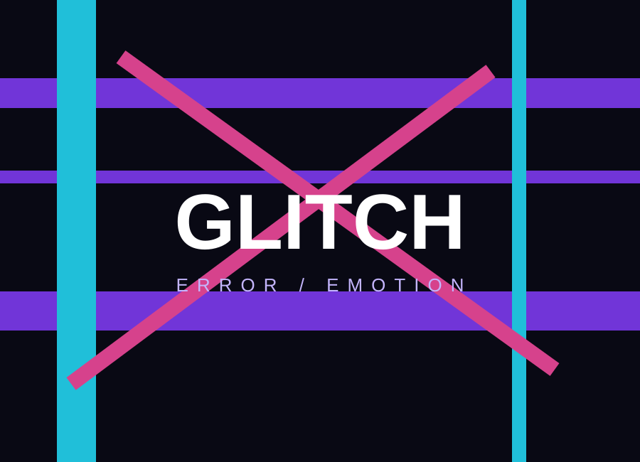

Ticokasaii is an independent artist, songwriter, beatmaker, and music producer. His music explores Hyperpop, Digicore, electronic music, hip-hop.

Hyperpop and Digicore are important influences in my creative direction. I am interested in their energetic rhythms, unusual vocal effects, distorted synthesizers, and experimental production techniques.
My goal is to continue developing as an artist and producer, experiment with new techniques, and build a recognizable visual and musical world.